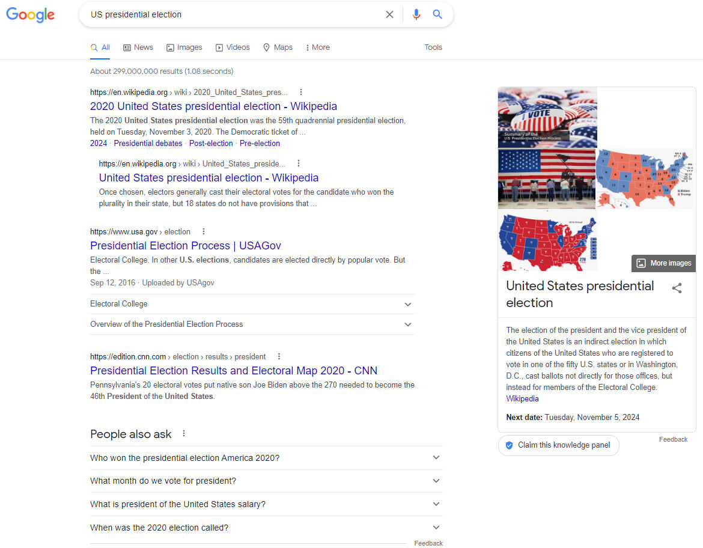
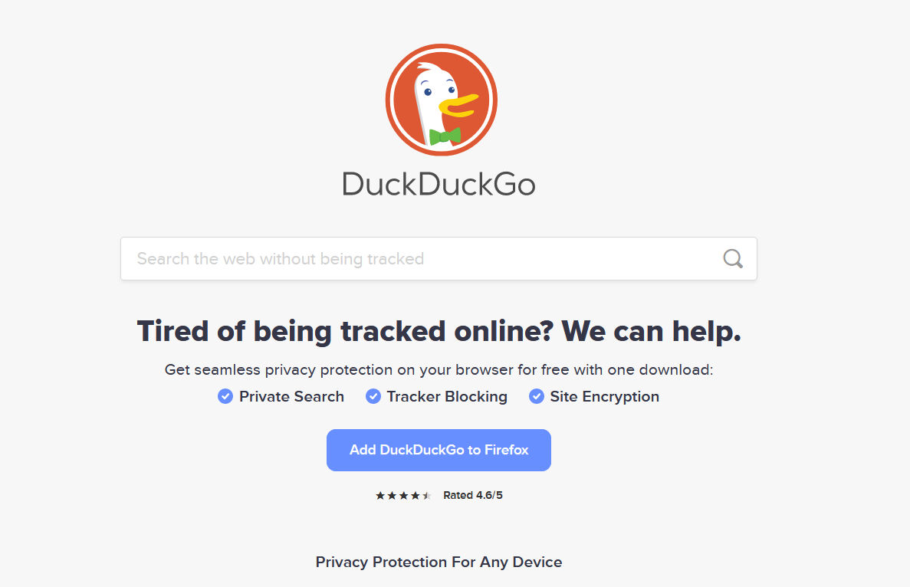

За полазнике
За тренере
За полазнике
За тренере
Модул 15: Управљање филтерима
Опис модула
Главни циљ овог модула је да објасни како се управља филтерима и шта можемо учинити да их избегнемо.
Секундарни циљ је да усмери тренере који желе да користе садржај овог модула за обуку полазника.
Уз ове циљеве, представљено је управљање филтерима, заједно са смерницама о томе како да се предмет предаје.
Полазници који успешно заврше овај модул моћи ће да:
- разумеју шта је персонализација и њене врсте
- разумеју ефекте персонализације и филтрирања
- разумеју шта корисници могу да ураде да би избегли филтриране балоне
- разумеју шта платформе могу да ураде да би избегле филтриране балоне
Поред тога, тренери који успешно заврше овај модул, моћи ће са већим разумевањем да подучавају управљање филтерима и шта се може учинити да би се избегли филтрирани балони.
Структура модула
Овај модул се састоји из следећих целина:
- Циљ, опис садржаја и исходи учења
- Структурa модула
- Смернице за полазнике
- Смернице за тренере (како се припремити, методе које треба користити и савети за тренере)
- Садржај (материјал за учење и вежбање)
- Квиз
- Референце (цитирани извори, препоручени извори и видео-записи)
Главни циљеви модула, опис садржаја и исходи учења објашњени су у делу Опис модула. Смернице за полазнике укључују упутства и сугестије за полазнике. Смернице за тренере воде тренере кроз различите фазе обуке и дају савете који би могли да буду корисни током предавања предмета. Садржај обухвата све материјале за учење и вежбе везане за садржај. Квиз укључује питања на која се одговара са тачно или нетачно или питања са са вишеструким избором како би полазници тестирали свој напредак. Одељак Референце обухвата списак извора цитираних у садржају модула и листу додатних извора и видео-записа који се препоручују за читање и гледање како би се проширило знање о овој теми.
Смернице за полазнике
Од полазника се очекује да прочитају текст, погледају препоручене видео-записе и ураде вежбања. Они могу да консултују предложене ресурсе за додатне информације. Након проучавања садржаја, полазницима се препоручује да ураде квиз како би проценили свој напредак. Уколико је потребно, могу поново проучити материјал за учење.
Смернице за тренере
Смернице за тренере укључују сугестије и савете о томе како да користе садржај овог модула за обуку полазника.
Припрема
Припремите презентацију (Пауерпоинт/Прези/Канва) која је обогаћена визуелним материјалима (слике и видео клипови) и јасним примерима. Примере и вежбања у овом модулу прилагодите темама која су познатије конкретној циљној групи. Избор локалних примера (специфичних за државу) у вези са актуелним или добро познатим проблемима помоћи ће да се јасније илуструје суштина и привуче пажња полазника. Што су примери познатији и популарнији, то ћете боље пренети поруку.
Почетак
Како бисте увели полазнике у тему, на почетку можете користити кратак квиз (3 до 5 питања) направљен у Кахуту или им поставити питања путем Ментиметар апликације. Поменути квиз и питалице се могу користити као мотивационо средство и средство за проверу постојећег знања полазника о овој теми. Питања, на пример, могу бити: Шта је персонализација? Какав утицај персонализација може да има на кориснике?
Методологија
Током обуке могу се комбиновати различите наставне методе:
- Предавања
- Дискусије
- Рад у групама
- Самопроцењивање
Савети за тренере
Загревање
Ефикасан начин укључивања полазника и утврђивања заједничких очекивања о томе шта ће научити јесте постављање неколико прелиминарних питања о овој теми. Ово се може урадити кроз групни рад, тако што ћете замолити полазнике да дискутују и прикупе идеје, или кроз индивидуални рад, тако што ћете замолити сваког полазника да напише своје идеје на самолепљивим папирићима. Активност се може спровести на следећи начин:
- Питајте полазнике
- да ли врше персонализацију на платформама које користе (као што су Гугл, Фејсбук, Јутјуб, итд.)
- да ли су свесни персонализације алгоритама на платформама које користе (као што су Гугл, Фејсбук, Јутјуб итд.)
- да ли они сами чине било шта да избегну персонализацију коју врше алгоритми на платформама које користе
- да ли су свесни да су под утицајем филтираних балона или ехо-комора
Представљање циља лекције
Циљ лекције треба да буде јасан (како се управља филтерима и шта се може учинити да би се избегли). Након питања за загревање, лакше ћете разјаснити циљеве.
Представљање садржаја лекције
Приликом представљања садржаја, водите рачуна о интеракцији са полазницима и подстакните их на активно учешће.
- Када објасните персонализацију и њене врсте, питајте учеснике да ли су свесни персонализације.
- Када помињете различите резултате интернет претраживача за исту претрагу, поткрепите своју тврдњу примерима претрага, уколико је могуће, од стране различитих људи и на различитим локацијама (земљама).
- Објасните ефекте коришћења извора са истом перспективом приликом трежења вести или информација о било којој теми, повезујући их са филтрираним балонима и ехо коморама.
- Нагласите зашто је важно да појединци буду свесни персонализације и филтрирања. Разговарајте о њеном значају како за појединца тако и за демократско друштво.
Закључак
Направите кратак резиме лекције и поставите неколико питања која ће помоћи да истакнете најважније поруке које желите да пренесете.
Следећа питања могу помоћи:
- Питајте полазнике шта корисници могу да ураде да би избегли филтриране балоне.
- Питајте полазнике шта платформе могу да ураде да избегну филтриране балоне.
Када долазите до закључка, побрините се да полазници разумеју ефекте персонализације и филтрирања.
Садржај: Управљање филтерима
Увод
Шта су алгоритми, како функционишу, њихове предности и мане, њихови ефекти, њихова веза са њузфидовима (енг. news feeds) и детаљне информације о филтрираним балонима и ехо-коморама објашњене су у Модулу 6. Овај модул се фокусира на оно што се може учинити да би се избегли филтери који се користе у алгоритмима.
Данас махом зависимо од алгоритамске персонализације и препорука (као што су Гуглови персонализовани резултати и Фејсбуков њузфид, који одлучују уместо нас ко види ажурирања) (Pariser, 2011a). Коришћени алгоритми доносе ове изборе користећи податке које платформе прикупљају на основу наше претходне употребе и податке које добровољно дајемо платформама (Fletcher, n.d.). У овом тренутку, вреди поменути разлику између персонализације коју сами бирате и унапред одабране персонализације.
Персонализација коју сами бирамо односи се на персонализацију коју добровољно радимо, а таква персонализација је посебно важна када је у питању коришћење вести. Људи увек доносе различите одлуке како би персонализовали своју употребу вести (на пример, које новине да купе, које ТВ канале да гледају, а које да избегавају). Ова ситуација се такође назива “селективно излагање” и на њу утиче низ различитих ствари, попут интересовања људи за вести, њихових политичких уверења, итд. (Fletcher, n.d.).
Унапред одабрана персонализација, с друге стране, је персонализација која се врши над људима, понекад алгоритмима, а понекад без њиховог знања. Ово је директно повезано са филтрираним балонима, зато што алгоритми одлучују у име људи, али људи тога можда нису свесни (Fletcher, n.d.).
За многе кориснике, персонализовање резултата претраге је корисно и згодно. С друге стране, многим корисницима је непријатно због чињенице да су странице на које наилазе обликоване силама које су ван њихове контроле (Ensor, 2017). У суштини, фокусирање на пружање и конзумирање садржаја који је блиско усклађен са вашим наклоностима може створити балон или комору која ограничава ваш поглед на ширу слику (Ensor, 2017).
Људи имају специфичан циљ приликом коришћења претраживача за приступање вестима, а то је проналажење одређене вести. Међутим, када тражите одређену тему, може се десити да претраживачи користе алгоритамски одабир на основу података прикупљених о вашим претходним употребама. Дакле, када се људи улогују на претраживаче, постоји могућност да ће их алгоритамски одабир задржати у филтрираном балону (Fletcher, n.d.). У 2011. години, наведено је да Гугл нуди персонализоване резултате посматрајући 57 различитих сигнала (од тога где се корисници налазе до типа прегледача који користе) (Pariser, 2011a). Данас се наводи да се више од 200 фактора узима у обзир приликом одлучивања о нивоу релевантности резултата који ће бити приказани на Гуглу (Dean, 2021). Међутим, није у потпуности јасно коју другу врсту алгоритма Гугл користи.
Ефекти персонализације у оквиру Гугла илустровани су примерима у наставку. Први пример је са пријављеним корисником из Турске. Други је од анонимног корисника из Турске. Последњи је од анонимног корисника из Сједињених Држава.

Извор: Гугл претрага за упит “US presidential election” за корисника пријављеног из Турске

Извор: Гугл претрага за упит “US presidential election” за анонимног корисника из Турске

Извор: Гугл претрага за упит “US presidential election” за анонимног корисника из САД
С друге стране, платформе друштвених мрежа често комбинују персонализацију коју сами бирате са унапред изабраном персонализацијом. Међутим, такође су познате наклоности корисника о томе које новинске организације прате или не. С друге стране, могуће је да алгоритми сакрију вести од људи за које нису заинтересовани или са платформи које им се посебно не допадају (Fletcher, n.d.).
Ефекти персонализације на Инстаграму су илустровани примерима у наставку. Први пример је са пријављеним корисником из Турске, а други је са анонимним корисником из Турске.


Извор: Истаграм претрага за појам “Venice” са пријављеним корисником из Турске

Source: Истаграм претрага за појам “Venice” са анонимим корисником из Турске
Већина платформи не пружа транспарентне информације о својим алгоритмима који раде у позадини. Наводи се да алгоритми претраживача, платформи друштвених мрежа и других великих онлајн посредника смањују разноврсност информација којима појединци могу да приступе кроз филтриране балоне и користе их у различите сврхе, што може представљати велику претњу демократији (Bozdağ & van den Hoven, 2015, стр. 249). Нетранспарентност коришћених филтера ограничава слободу избора, а захваљујући увиду који је добијен преко бројних података откривеним као резултат информационог понашања корисника, појединци се сврставају у различите категорије чија дефиниција није транспарентна. С друге стране, грађани треба да буду свесни различитих ставова и опција како би могли да процењују различите алтернативе и доносе разумне одлуке. Међутим, алгоритми то спречавају када одлучују у име корисника ком ће садржају они приступити, без њиховог знања или увида шта је други садржај.
Како можемо да избегнемо филтриране балоне?
Једини начин да се потпуно решите филтрираних балона је да престанете да користите Гугл, друге платформе друштвених мрежа и платформе за вести (Ensor, 2017). Међутим, ово није реално решење. Иако није могуће у потпуности побећи од алгоритама и филтрираних балона и ехо-комора који су њихови одрази, постоје нека питања на која и корисници и платформе треба да обрате пажњу.
Шта корисници могу да учине?
1. Коришћење различитих извора уместо једног или неколико извора:
Ехо коморе су постојале пре Гугла и Фејсбука. На пример, новине већ годинама извештавају о вестима са сопственом пристрасношћу. Ово се примећује по разликама у тумачењима које новине и новинске платформе праве о томе шта се дешава у свету (Ensor, 2017). Праћење сајтова са вестима који имају за циљ да понуде широку перспективу може вас спречити да створите предрасуде према платформама. Без обзира на изворе које често користимо, брзи поглед на насловне стране ресурса ће вам дати представу о било каквој пристрасности (Farnam Street, n.d.). Најмоћнији алат за избегавање филтрираног балона платформи као што је Гугл је сопствена свест о ситуацији. Уколико тражите важне информације, покушајте да користите више извора и објективно сагледате ситуацију (Ensor, 2017).
Није лако прекинути навике, променити изворе вести који се свакодневно проверавају, или уместо њих додати нове. Међутим, повремено проширивање/мењање својих навика на мрежи значајно повећава ваше шансе да упознате нове идеје и људе (Pariser, 2011b, стр. 122).
Могуће је рећи да филтрирани балони узрокују или омогућавају друштвену сегрегацију од стране политике, и да ће излагање људи садржајима о алтернативним политичким перспективама смањити политички екстремизам, а то је изузетно важно приликом суочавања са поларизацијом (Stray, 2012). Бити гладан истине је најважнији аспект превазилажења филтрираних балона. Изузетно је важно да сви имају комплетан увид у предмет дискусије и да сагледавају проблеме из више извора како би се спречило да демократија буде угрожена (Allred, 2018).
2. Брисање или блокирање колачића у прегледачу:
Многи веб-сајтови постављају “колачиће” (енг. “cookies” - мале текстуалне датотеке) сваки пут када их посетимо. Ови колачићи се затим користе за одређивање садржаја који нам се приказује. Редовно брисање колачића које ваш интернет прегледач користи да би идентификовао ко сте представља делимично решење (Farnam Street, n.d.; Pariser, 2011b, стр. 122).

Гугл Хром претраживач (Google Chrome) - Подешавања – Приватност и безбедност – Колачићи и други подаци о сајтовима

Фајерфокс претраживач (Firefox) – Подешавања – Приватност и безбедност - Колачићи и други подаци о сајтовима
Колачићи се могу избрисати ручно (изаберите “Подешавања”, а затим изаберите брисање колачића у одељку “Приватност и безбедност”). Постоје и екстензије за прегледаче које уклањају колачиће (Farnam Street, n.d.).
Поред брисања колачића и историје претраге, такође можете да без пријављивања на своје налоге (на пример, без пријављивања на Гугл мејл) урадите оно шта вам је потребно (Farnam Street, n.d.; Pariser, 2011b, стр. 122).
Поред тога, можете покренути све своје активности на мрежи у “инкогнито” прозору, где се мањи број ваших личних података чува. Међутим, ово се не чини као загарантован начин, јер већина услуга неће радити како би требало (Pariser, 2011b, стр. 122). Претраживање у приватном прозору (енг. private browsing) функционише тако што вам омогућава да претражујете у анонимном прозору без чувања лозинки, колачића и историје прегледања. Међутим, не сакрива ваш идентитет или активности на мрежи. Веб-сајтови и провајдери интернет услуга могу да прикупљају информације о вашој посети чак и ако нисте улоговани (“Common myths about private”, n.d.; Google Chrome help, 2021). Када се пријавите на било који од својих омиљених Фејсбук, Амазон, Гмејл и сличних сајтова у анонимном режиму, ваше радње више неће бити анонимне или привремене. И док се колачићи и подаци за праћење бришу када се ваша приватна сесија заврши, они се и даље могу користити док је сесија активна, повезујући ваше активности између различитих налога и профила. У овом случају, на пример, ако сте пријављени на Фејсбук, он може да види шта радите на другим сајтовима и да прилагоди своје огласе у складу са тим, чак и у анонимном режиму. Исто важи и за Гугл (Nield, 2020). Ово вас спречава да будете потпуно слободни. Филтрирани балон није специфичан само за личне активности на мрежи, већ он такође узима у обзир личне факторе као што су уређај који користите и локацију (Ensor, 2017).
Други приступи да се било какво праћење сведе на минимум су одабир прегледача који је оријентисан на приватност, одабир сајтова који корисницима дају већу контролу и видљивост над начином на који њихови филтери функционишу и како користе личне податке, коришћење претраживача који не “копају” ваше податке (као што су као DuckDuckGo, ) или инсталирање поузданог ВПН програма (виртуелна приватна мрежа; енг. VPN - virtual private network) (Nield, 2020; Pariser, 2011b, стр. 122).

Извор: DuckDuckGo Search
3. Kоришћење екстензија прегледача за блокирање огласа:
Овe екстензије уклањају већину огласа са веб-сајтова које посећујемо. Међутим, већина сајтова се ослања на приход од реклама да би подржао свој рад. Поједини сајтови инсистирају на томе да корисници онемогуће блокаторе огласа пре него што погледају страницу. Ово су недостаци екстензија прегледача за блокирање огласа (Farnam Street, n.d.).
4. Коришћење софтвера за пробијање филтрираних балона:
Коришћење апликација или екстензија прегледача као што су Escape Your Bubble (екстензија за Хром), Read Across The Aisle (екстензија за Хром), PolitEcho (екстензија за Хром) такође помаже да се избегну филтрирани балони.
5. Обука / Едукација:
Један од највећих проблема са филтрираним балонима је то што већина људи чак ни не зна шта су филтрирани балони. Појединци који ово не знају неће моћи да предузму неопходне кораке да истраже истину, јер вероватно нису свесни да су њихови резултати персонализовани. Према томе, подизање свести међу појединцима о филтрираним балонима и начину на који они манипулишу нама, конзумирање информација преко различитих поузданих сајтова, тражење више аспеката аргумената, и едукација ће помоћи да се смање негативни ефекати филтрираних балона (Allred, 2018). Требало би осигурати да појединци науче да обављају напредне претраге користећи помоћнике за претрагу у својим претрагама на Гуглу или другим ресурсима (Cisek & Krakowska, 2018). С тим у вези, изузетно је важно да појединци развију информатичку и новинску писменост.
С друге стране, такође постаје важно развијати алгоритамску писменост на основном нивоу. Грађани ће све чешће морати да доносе одлуке о алгоритамским системима који утичу на наш јавни и национални живот. Чак и ако нису довољно упућени да читају хиљаде редова кода, корисно је да науче основе (попут како да манипулишу променљивама, петљама и меморијом), како ови системи функционишу и где могу да направе грешке (Pariser, 2011b, стр. 124).
Промена нашег сопственог понашања као појединаца, другим речима као корисника, део је процеса решавања филтрираних балона. Међутим, само ово није довољно. Платформе које унапређују персонализацију такође имају неке аспекте (елементе, сегменте) које треба да размотре (Pariser, 2011b, стр. 125).
Шта платформе могу да учине?
У борби против филтрираних балона, пре свега, креатори платформи друштвених мрежа и других извора информација треба да покушају да направе непристрасне веб-сајтове и да буду свесни грађанских обавеза које намећу својим алгоритмима (Allred, 2018).
Други важан корак је да платформе покушају да своје системе за филтрирање учине транспарентнијим за јавност. Taко би било могуће дискутовати о томе како су они уопште испунили своје обавезе. Чак и ако се не може постићи потпуна транспарентност, могуће је да ове платформе јасније представе како приступају питањима сортирања и филтрирања (Pariser, 2011b, стр. 125). Транспарентност се не огледа само у томе да се рад система учини јавним, већ то такође значи да корисници интуитивно разумеју како систем функционише. Ово је неопходан предуслов да би људи контролисали и користили ове алате, а не да алати контролишу и користе њих (Pariser, 2011b, стр. 126).
Такође је изузетно важно да платформе објасне како користе податке (као на пример, који делови информација су персонализовани у којој мери и на основу чега) и да буду транспарентне у вези с тим (Pariser, 2011b, стр. 126).
Када је реч о данашњем великом и брзом протоку информација, очигледно је да је потребно изабрати између њих. Овде се поставља питање како одабрати шта (које информације) неко треба да види. Иако нема јасног одговора на ово, платформе могу покушати да им понуде различите могућности уместо што покушавају да изаберу за некога другог (Stray, 2012).
Укратко, најважнији задатак за кориснике приликом избегавања филтрираних балона је да буду свесни њиховог постојања, као и да прикупљају информације из различитих извора. Најважнији задатак платформи је да обезбеде транспарентност о логици рада алгоритама које користе и да информишу своје кориснике о томе које податке прикупљају и у које сврхе.
Вежбања
Вежбање 1
Вежбање 2
Квиз
Референце
Allred, K. (2018, April 13). The causes and effects of “filter bubbles” and how to break free. Medium.
Bozdağ, E. & van den Hoven, J. (2015). Breaking the filter bubble: Democracy and design. Ethics and Information Technology, 17, 249-265.
Cisek, S. & Krakowska, M. (2018). The filter bubble: A perspective for information behaviour research. Paper presented at ISIC 2018 Conference.
Common myths about private browsing. (n.d.). Support Mozilla.
Dean, B. (2021, October 10). Google’s 200 ranking factors: The complete list (2021). Backlinko.
Ensor, S. (2017, August 18). How to escape Google's filter bubble. Search Engine Watch.
Farnam Street. (n.d.). How filter bubbles distort reality: Everything you need to know [Blog post].
Fletcher, R. (n.d.). The truth behind filter bubbles: Bursting some myths. Reuters Institute for the Study of Journalism.
Google Chrome help. (2021). Browse in private.
Nield, D. (2020, February 8). Incognito mode may not work the way you think it does. Wired.
Pariser, E. (2011a, March). Beware online “filter bubbles. TED Talks.
Pariser, E. (2011b). The filter bubble: What the Internet is hiding from you. The Penguin Press.
Stray, J. (2012, July 11). Are we stuck in filter bubbles? Here are five potential paths out. NiemanLab.
Препоручени извори
Lanier, J. (n.d.). Agents of alienation.
Piore, A. (2018, August 22). Technologists are trying to fix the “filter bubble” problem that tech helped create. MIT Technology Review.
Sunstein, C. (2007). Republic.com 2.0. Princeton University Press.
Препоручени видео-записи
Pariser, E. (2019, July). What obligation do social media platforms have to the greater good [Video]. TED Talks.